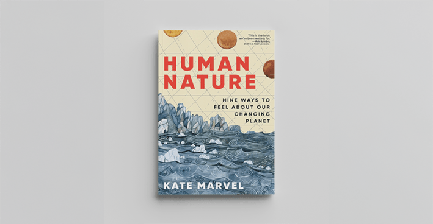
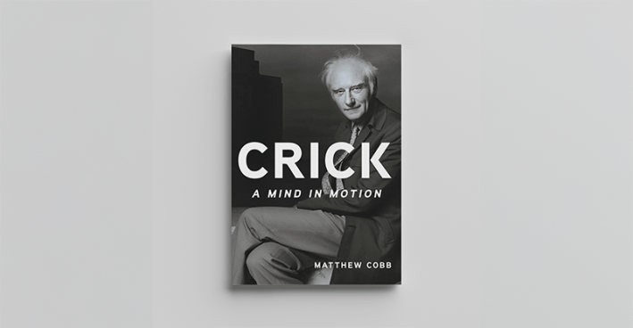
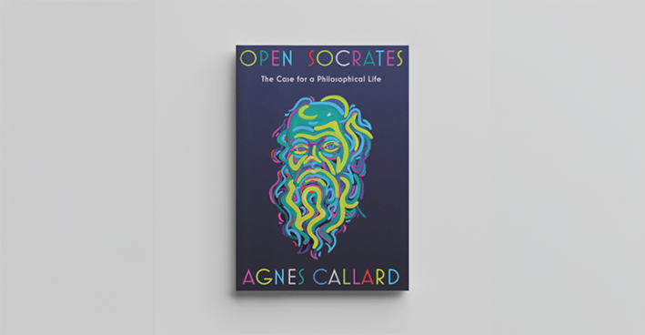
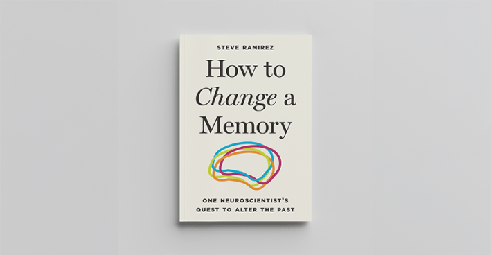
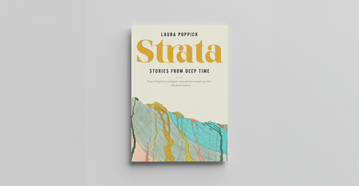
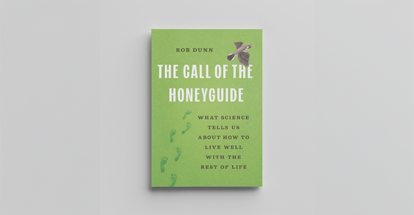
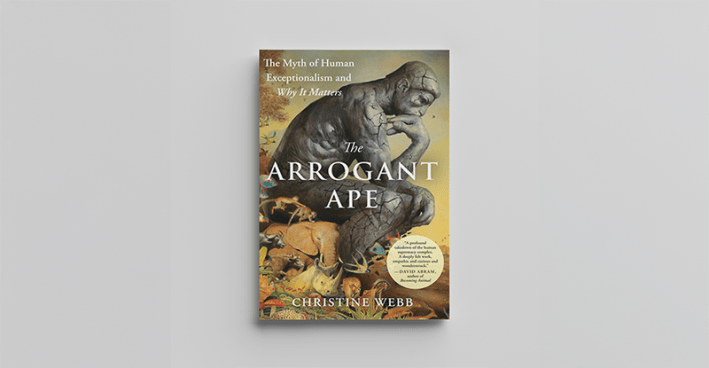
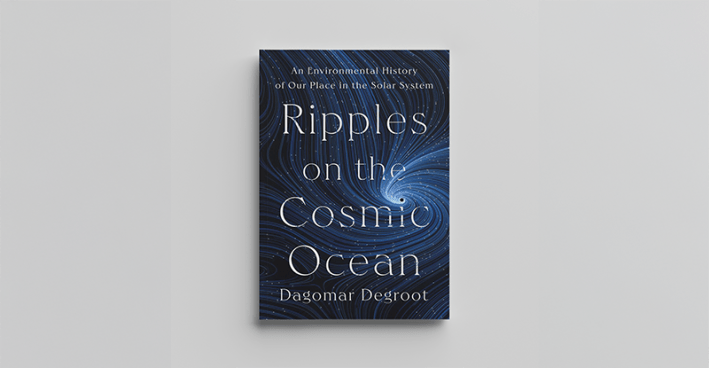
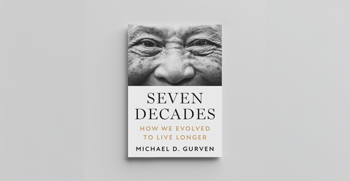
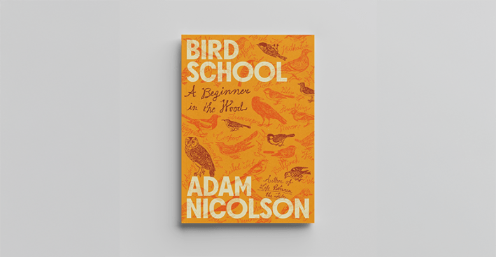

Isn’t reading books just the best thing in the world? Especially when discontent reigns outside our winter windows. We think so! Nothing picks up our spirits and makes us feel more alive than the brilliant insights the best science writers deliver into the cosmos, nature, and ourselves. Nautilus was thrilled this year to feature either excerpts from the 10 books below, interviews with the authors, or original writing from them. We can’t recommend their 2025 books with more enthusiasm and holiday cheer.

HarperCollins Publishers
The Earth scientist gets personal in one of the most original and emotionally moving books on climate change we've ever read.
Read a Nautilus feature on Marvel, “You Have Never Felt Climate Change Like This.”

Hachette Book Group
This masterful biography reveals the many sides of the Nobel laureate who co-discovered the molecular shape of DNA, sought to crack the hard problem of consciousness, loved poetry, and tripped on LSD.
Read Matthew Cobb’s 3 Greatest Revelations while writing Crick.

W. W. Norton & Company
Philosopher Agnes Callard told Nautilus that in high school she didn’t want to interpret ancient Greek philosopher Socrates, “I wanted to be Socrates.” In captivating prose, Callard embodies Socrates to drill home the point that the path to a fuller life is a rocky road through provoking others who provoke us.
Read an excerpt on Nautilus, “The Pretense of Political Debate.”

Princeton University Press
When neuroscientist Ramirez sunk into grief over the death of his mentor, his academic research got more real than he could imagine. His personal story makes the science in How to Change a Memory even more riveting.
Read a Nautilus interview with Ramirez, “He Erased Memory in Mice. Then Thought About Erasing His Own.”

W. W. Norton & Company
Journalist Laura Poppick journeys back through time to mine the geologic and fossil layers for stories of Earth’s history. It’s a transformative journey for readers and her. “Any field of science can spark awe and wonder, but I have found that Earth history can go a step further by offering a deep source of solace and grounding,” Poppick told Nautilus.
Read an excerpt on Nautilus, “The Stories Rocks Tell Us.”

Hachette Book Group
The ecologist spotlights a remarkable range of ecosystems across the globe to impress on us the mutual interdependence of all species, including us.
Read an excerpt on Nautilus, “We Owe It All to Figs.”

Penguin Random House
Primatologist Christine Webb argues in prose that never lets it foot off the gas that feeling superior to animals is the human worldview at the root of all environmental evil. “Seeing ourselves clearly—not as rulers, but as participants in a larger web—is one of the most urgent scientific and moral challenges of our time,” she told Nautilus.
Read Christine Webb’s 3 Greatest Revelations while writing The Arrogant Ape.

Space exploration doesn’t distract us from urgent Earthy issues; it helps us solve threats to Earth, like CFCs shredding the ozone layer. One of the most fascinating histories of space exploration we know.
Read Dagomar’s Degroot 3 Greatest Revelations while writing Ripples on the Cosmic Ocean.

Princeton University Press
Sanitation and modern medicine may get the credit for human longevity today, but anthropologist Michael Gurven explains that's not the whole story; human evolution itself built us to last about 70 years.
Read Michael Gurven’s 3 Greatest Revelations while writing Seven Decades.

Macmillan Publishers
Literary historian and nature writer Adam Nicolson allows us to see nature anew, just as he does, as he embarks on a late-in-life journey to learn about the birds in Sussex Weald, the “damp and tree-thick country” in England that he and the birds call home.
Read an excerpt on Nautilus, “Why I Became a Birdwatcher.”
Lead image: Diki Yuliandri / Shutterstock